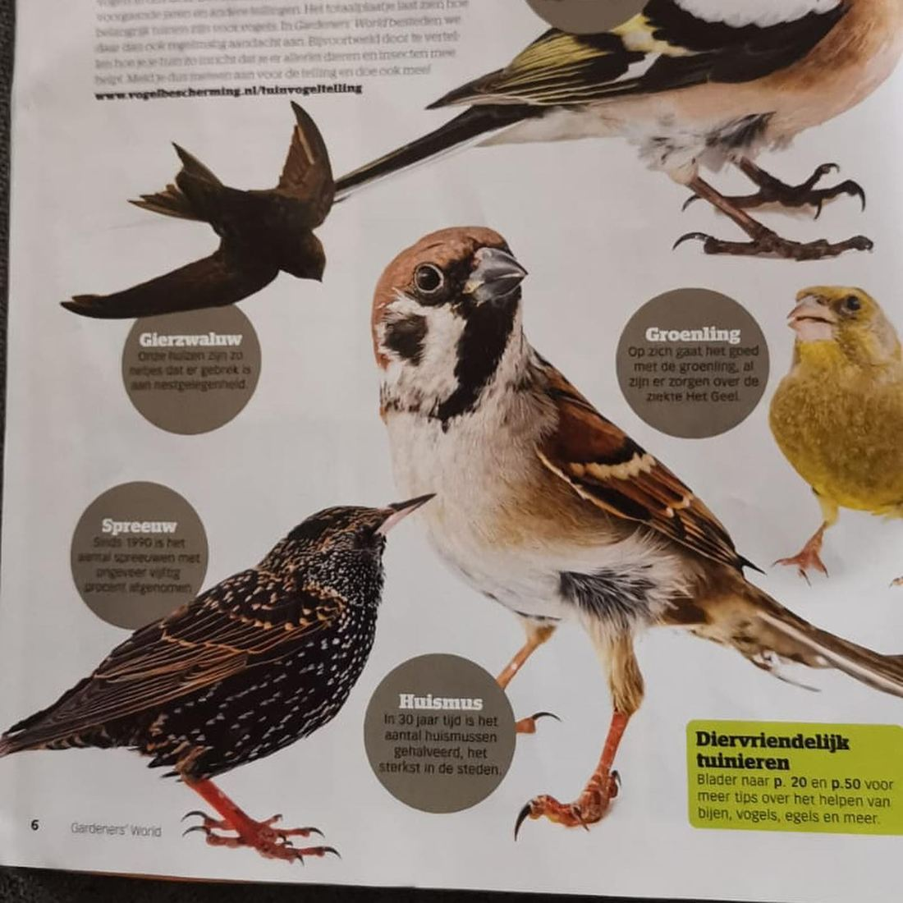
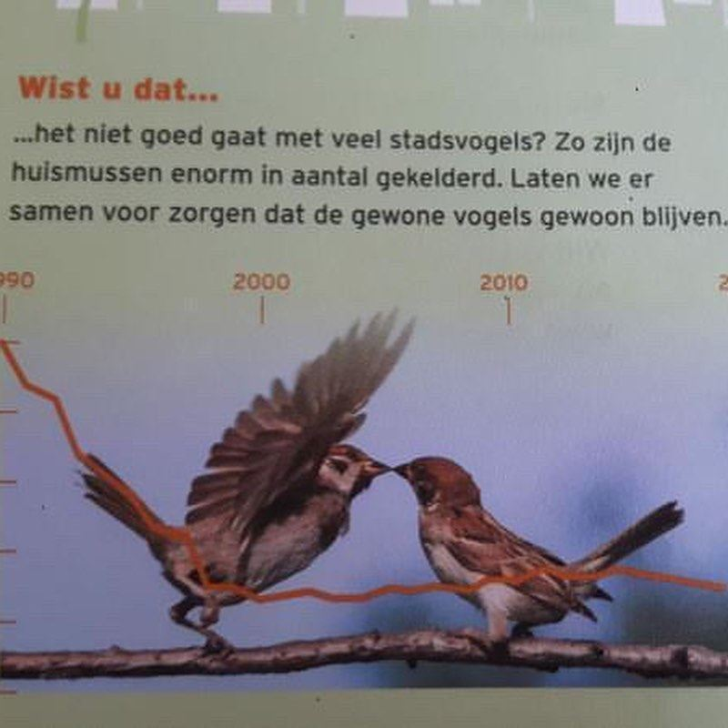

Ringmus, geen huismus
23 december 2020 · Vogelbescherming Nederland, Gardeners World
- Op de foto
- Ringmus
- Het ging over
- Huismus


Het verschil tussen Huismussen en Ringmussen is niet voor iedereen makkelijk. Zo gaan @vogelbeschermingnederland en Gardeners world hier toch allebei even de mist in. Ach, het kan de beste overkomen!
Met dank aan @ggbalore en @merijnloeve voor het insturen!